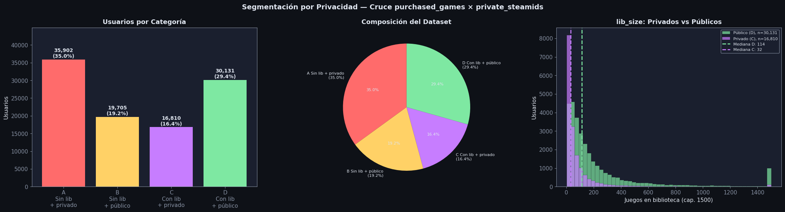
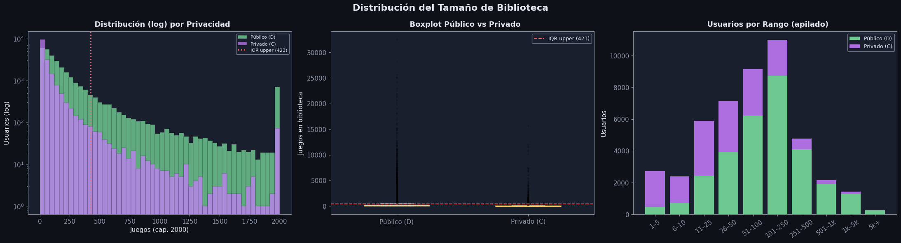
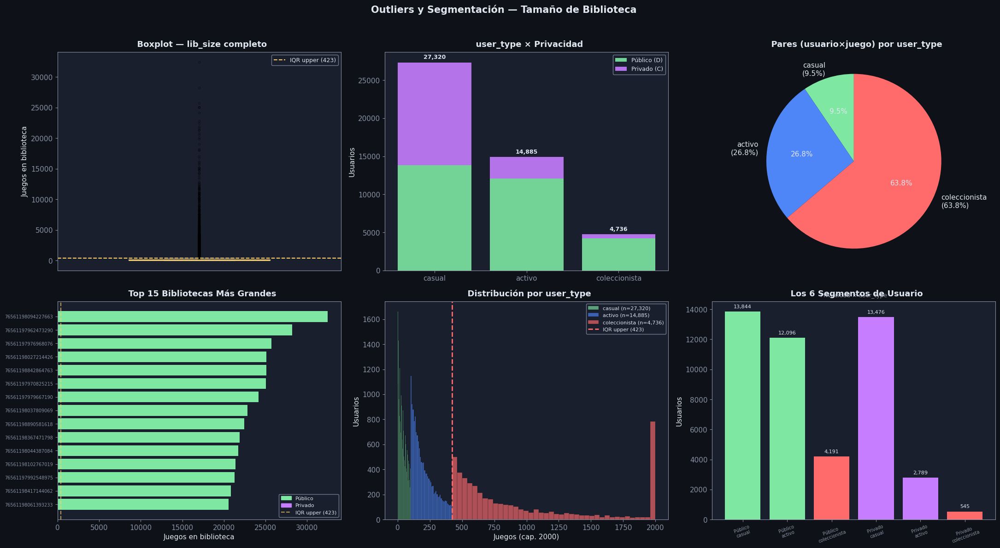
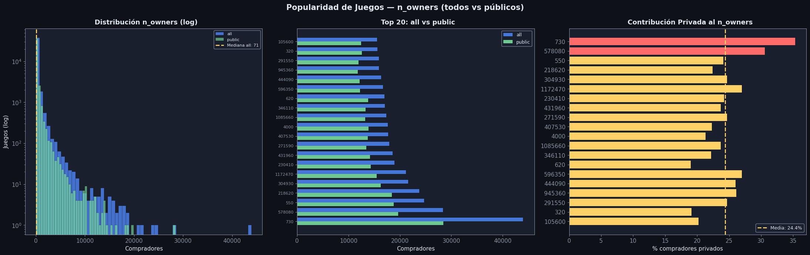

EDA: purchased_games × private_steamids#
Columnas de purchased_games:
Columna |
Tipo |
Descripción |
|---|---|---|
|
int |
ID del jugador (Steam ID) |
|
str (lista serializada) |
Lista de |
Imports y configuración#
import ast
import numpy as np
import pandas as pd
import matplotlib.pyplot as plt
import matplotlib.patches as mpatches
import seaborn as sns
from collections import Counter
import warnings
warnings.filterwarnings('ignore')
DARK_BG = '#0e1117'
CARD_BG = '#1a1f2e'
ACCENT1 = '#4f86f7'
ACCENT2 = '#7ee8a2'
ACCENT3 = '#ff6b6b'
ACCENT4 = '#ffd166'
ACCENT5 = '#c77dff'
TEXT = '#e0e6f0'
MUTED = '#8892a4'
plt.rcParams.update({
'figure.facecolor': DARK_BG, 'axes.facecolor': CARD_BG,
'axes.edgecolor': MUTED, 'axes.labelcolor': TEXT,
'xtick.color': MUTED, 'ytick.color': MUTED,
'text.color': TEXT, 'grid.color': '#2d3348',
'grid.alpha': 0.6, 'font.family': 'DejaVu Sans',
'font.size': 11,
})
def title_ax(ax, txt, sub=None):
ax.set_title(txt, fontsize=13, fontweight='bold', color=TEXT, pad=8)
if sub:
ax.text(0.5, 1.02, sub, transform=ax.transAxes,
ha='center', fontsize=9, color=MUTED)
Carga#
df_private = pd.read_csv('Datos/private_steamids.csv')
private_set = set(df_private['playerid'].tolist())
print(f"IDs privados (archivo completo): {len(private_set):,}")
IDs privados (archivo completo): 227,963
def parse_purchased_games(filepath):
"""Parser para CSV con listas multi-línea.
Retorna:
records — lista de dicts {playerid, library, lib_size} (library parseada OK)
empty_ids — lista de playerids con library vacía
"""
records, empty_ids = [], []
current_pid, current_parts, in_multiline = None, [], False
with open(filepath, 'r', encoding='utf-8') as f:
f.readline()
for raw_line in f:
line = raw_line.rstrip('\r\n')
if not in_multiline:
comma_idx = line.find(',')
if comma_idx == -1: continue
pid_str, rest = line[:comma_idx], line[comma_idx+1:]
if rest.strip() in ('', '""', '[]'):
try: empty_ids.append(int(pid_str))
except: pass
continue
if rest.startswith('"'):
rest = rest[1:]
if rest.endswith('"'):
try:
lib = ast.literal_eval(rest[:-1])
records.append({'playerid': int(pid_str), 'library': lib,
'lib_size': len(lib)})
except: empty_ids.append(int(pid_str))
else:
current_pid, current_parts, in_multiline = pid_str, [rest], True
else:
try:
lib = ast.literal_eval(rest)
records.append({'playerid': int(pid_str), 'library': lib,
'lib_size': len(lib)})
except: empty_ids.append(int(pid_str))
else:
if line.endswith('"'):
current_parts.append(line[:-1])
try:
lib = ast.literal_eval(''.join(current_parts))
records.append({'playerid': int(current_pid), 'library': lib,
'lib_size': len(lib)})
except: empty_ids.append(int(current_pid))
current_pid, current_parts, in_multiline = None, [], False
else:
current_parts.append(line)
if in_multiline and current_pid and current_parts:
try:
lib = ast.literal_eval(''.join(current_parts) + ']')
records.append({'playerid': int(current_pid), 'library': lib,
'lib_size': len(lib), 'truncated': True})
except: empty_ids.append(int(current_pid))
return records, empty_ids
PG_PATH = 'Datos/purchased_games.csv'
records, empty_ids = parse_purchased_games(PG_PATH)
total_rows = len(records) + len(empty_ids)
print(f"Total filas en el archivo : {total_rows:,}")
print(f"Con library (parseada OK) : {len(records):,} ({len(records)/total_rows*100:.1f}%)")
print(f"Con library vacía : {len(empty_ids):,} ({len(empty_ids)/total_rows*100:.1f}%)")
Total filas en el archivo : 102,548
Con library (parseada OK) : 46,941 (45.8%)
Con library vacía : 55,607 (54.2%)
Segmentación por Privacidad Cruce con private_steamids#
Hallazgos#
El cruce revela que los usuarios del dataset se dividen en 4 categorías con perfiles y utilidades distintas:
Categoría |
n |
% |
Significado |
|---|---|---|---|
A Sin library + privado |
35,902 |
35.0% |
Perfil privado sin datos de biblioteca visibles |
B Sin library + público |
19,705 |
19.2% |
Usuarios públicos sin juegos detectados (cuentas vacías o nuevas) |
C Con library + privado |
16,810 |
16.4% |
Biblioteca capturada pero perfil configurado como privado |
D Con library + público |
30,131 |
29.4% |
Gold standard biblioteca visible y perfil público |
Hallazgo clave: los usuarios privados tienen bibliotecas más pequeñas#
Categoría C (privado con library)
mediana: 32 juegos
percentil 75: 80 juegos
Categoría D (público con library)
mediana: 114 juegos
percentil 75: 251 juegos
Esto sugiere que los usuarios con bibliotecas más pequeñas tienden con mayor frecuencia a tener perfiles privados, mientras que los perfiles públicos concentran bibliotecas significativamente más grandes.
En total, 54.2% de los usuarios no tienen biblioteca observable en el dataset (categorías A+B), mientras que 45.8% sí presentan al menos un juego registrado (categorías C+D).
cat_a = [pid for pid in empty_ids if pid in private_set]
cat_b = [pid for pid in empty_ids if pid not in private_set]
cat_c = [r for r in records if r['playerid'] in private_set]
cat_d = [r for r in records if r['playerid'] not in private_set]
total = len(cat_a) + len(cat_b) + len(cat_c) + len(cat_d)
for label, grp in [('A Sin library + privado', cat_a),
('B Sin library + público', cat_b),
('C Con library + privado', cat_c),
('D Con library + público', cat_d)]:
n = len(grp)
print(f"{label} : {n:,} ({n/total*100:.1f}%)")
print()
df_c = pd.DataFrame([{'playerid': r['playerid'], 'lib_size': r['lib_size'],
'is_private': True} for r in cat_c])
df_d = pd.DataFrame([{'playerid': r['playerid'], 'lib_size': r['lib_size'],
'is_private': False} for r in cat_d])
df = pd.concat([df_c, df_d], ignore_index=True)
print("lib_size — privados con library (Cat. C):")
print(df_c['lib_size'].describe(percentiles=[.25,.5,.75]).round(1))
print()
print("lib_size — públicos con library (Cat. D):")
print(df_d['lib_size'].describe(percentiles=[.25,.5,.75]).round(1))
A Sin library + privado : 35,902 (35.0%)
B Sin library + público : 19,705 (19.2%)
C Con library + privado : 16,810 (16.4%)
D Con library + público : 30,131 (29.4%)
lib_size — privados con library (Cat. C):
count 16810.0
mean 95.5
std 377.4
min 1.0
25% 11.0
50% 32.0
75% 80.0
max 15685.0
Name: lib_size, dtype: float64
lib_size — públicos con library (Cat. D):
count 30131.0
mean 320.4
std 1039.7
min 1.0
25% 50.0
50% 114.0
75% 251.0
max 32463.0
Name: lib_size, dtype: float64
fig, axes = plt.subplots(1, 3, figsize=(22, 6))
fig.patch.set_facecolor(DARK_BG)
fig.suptitle('Segmentación por Privacidad — Cruce purchased_games × private_steamids',
fontsize=14, fontweight='bold', color=TEXT)
cat_labels = ['A\nSin lib\n+ privado', 'B\nSin lib\n+ público',
'C\nCon lib\n+ privado', 'D\nCon lib\n+ público']
cat_sizes = [len(cat_a), len(cat_b), len(cat_c), len(cat_d)]
cat_colors = [ACCENT3, ACCENT4, ACCENT5, ACCENT2]
ax = axes[0]
bars = ax.bar(cat_labels, cat_sizes, color=cat_colors)
for bar, val in zip(bars, cat_sizes):
ax.text(bar.get_x() + bar.get_width()/2, bar.get_height() + total*0.005,
f'{val:,}\n({val/total*100:.1f}%)', ha='center', fontsize=10,
color=TEXT, fontweight='bold')
ax.set_ylabel('Usuarios'); ax.set_ylim(0, max(cat_sizes)*1.25)
title_ax(ax, 'Usuarios por Categoría')
ax = axes[1]
ax.pie(cat_sizes,
labels=[f'{l.replace(chr(10), " ")}\n({s/total*100:.1f}%)'
for l, s in zip(cat_labels, cat_sizes)],
colors=cat_colors, startangle=90,
textprops={'color': TEXT, 'fontsize': 8}, autopct='%1.1f%%')
title_ax(ax, 'Composición del Dataset')
ax = axes[2]
cap = 1500
ax.hist(df_d['lib_size'].clip(upper=cap), bins=50, color=ACCENT2, alpha=0.7,
edgecolor=DARK_BG, linewidth=0.3, label=f'Público (D), n={len(df_d):,}')
ax.hist(df_c['lib_size'].clip(upper=cap), bins=50, color=ACCENT5, alpha=0.7,
edgecolor=DARK_BG, linewidth=0.3, label=f'Privado (C), n={len(df_c):,}')
ax.axvline(df_d['lib_size'].median(), color=ACCENT2, linewidth=2, linestyle='--',
label=f'Mediana D: {df_d["lib_size"].median():.0f}')
ax.axvline(df_c['lib_size'].median(), color=ACCENT5, linewidth=2, linestyle='--',
label=f'Mediana C: {df_c["lib_size"].median():.0f}')
ax.legend(fontsize=8, facecolor=CARD_BG, edgecolor=MUTED, labelcolor=TEXT)
ax.set_xlabel(f'Juegos en biblioteca (cap. {cap})'); ax.set_ylabel('Usuarios')
title_ax(ax, 'lib_size: Privados vs Públicos')
plt.tight_layout()
plt.show()

Análisis y tratamiento de valores faltantes#
Diagnóstico resuelto#
Gracias al cruce con private_steamids, los usuarios sin biblioteca observable se descomponen en dos causas principales:
Causa |
n |
% del total |
Tratamiento |
|---|---|---|---|
Perfil privado sin datos (Cat. A) |
35,902 |
35.0% |
Etiquetar |
Sin juegos genuinamente (Cat. B) |
19,705 |
19.2% |
Etiquetar |
En total, 54.2% de los usuarios no tienen biblioteca observable en el dataset.
De ellos, la mayoría corresponde a perfiles privados (35.0%), mientras que 19.2% parecen ser cuentas públicas sin juegos registrados.
n_total = total
n_with_lib = len(df)
n_private_nd = len(cat_a)
n_no_games = len(cat_b)
print("Diagnóstico completo de faltantes:")
print(f" Con library (C + D) : {n_with_lib:,} ({n_with_lib/n_total*100:.1f}%)")
print(f" Sin library — perfil privado (A) : {n_private_nd:,} ({n_private_nd/n_total*100:.1f}%)")
print(f" Sin library — sin juegos reales (B) : {n_no_games:,} ({n_no_games/n_total*100:.1f}%)")
print()
rows_all = []
for r in cat_c:
rows_all.append({'playerid': r['playerid'], 'lib_size': r['lib_size'],
'has_library': True, 'is_private': True, 'reason': 'ok_private'})
for r in cat_d:
rows_all.append({'playerid': r['playerid'], 'lib_size': r['lib_size'],
'has_library': True, 'is_private': False, 'reason': 'ok_public'})
for pid in cat_a:
rows_all.append({'playerid': pid, 'lib_size': 0,
'has_library': False, 'is_private': True, 'reason': 'private_no_data'})
for pid in cat_b:
rows_all.append({'playerid': pid, 'lib_size': 0,
'has_library': False, 'is_private': False, 'reason': 'no_games'})
df_all = pd.DataFrame(rows_all)
print("Distribución de 'reason':")
print(df_all['reason'].value_counts())
print()
print("→ Para ML: usar df (solo has_library=True) con flag is_private.")
print("→ Los 'no_games' son cuentas sin actividad — excluir de features de usuario.")
Diagnóstico completo de faltantes:
Con library (C + D) : 46,941 (45.8%)
Sin library — perfil privado (A) : 35,902 (35.0%)
Sin library — sin juegos reales (B) : 19,705 (19.2%)
Distribución de 'reason':
reason
private_no_data 35902
ok_public 30131
no_games 19705
ok_private 16810
Name: count, dtype: int64
→ Para ML: usar df (solo has_library=True) con flag is_private.
→ Los 'no_games' son cuentas sin actividad — excluir de features de usuario.
Distribución del Tamaño de Biblioteca#
Hallazgos#
La distribución del tamaño de biblioteca es fuertemente sesgada a la derecha: mediana 76 juegos, media 240, y un máximo de 32,463 juegos.
La mayoría de los usuarios tiene bibliotecas relativamente pequeñas: el 75% posee 186 juegos o menos, mientras que el 90% tiene menos de 427 juegos.
Usando el criterio IQR (Q3 + 1.5×IQR = 423 juegos) se identifican 4,736 usuarios outliers (10.1%), correspondientes a bibliotecas significativamente más grandes que la mayoría.
Un usuario extremo posee 32,463 juegos, más de 10× el percentil 99, lo que sugiere un caso atípico como coleccionista extremo o cuenta asociada a distribución/curaduría.
print("Estadísticas globales de lib_size:")
print(df['lib_size'].describe(percentiles=[.1, .25, .5, .75, .90, .95, .99]))
print()
Q1 = df['lib_size'].quantile(0.25)
Q3 = df['lib_size'].quantile(0.75)
IQR = Q3 - Q1
upper_iqr = Q3 + 1.5 * IQR
p99 = df['lib_size'].quantile(0.99)
print(f"Q1={Q1:.0f} Q3={Q3:.0f} IQR={IQR:.0f}")
print(f"Umbral IQR (Q3 + 1.5×IQR) : {upper_iqr:.0f} juegos")
print(f"Percentil 99 : {p99:.0f} juegos")
print(f"Outliers IQR : {(df['lib_size'] > upper_iqr).sum():,} ({(df['lib_size'] > upper_iqr).mean()*100:.1f}%)")
Estadísticas globales de lib_size:
count 46941.000000
mean 239.848214
std 869.771849
min 1.000000
10% 10.000000
25% 28.000000
50% 76.000000
75% 186.000000
90% 427.000000
95% 761.000000
99% 3137.600000
max 32463.000000
Name: lib_size, dtype: float64
Q1=28 Q3=186 IQR=158
Umbral IQR (Q3 + 1.5×IQR) : 423 juegos
Percentil 99 : 3138 juegos
Outliers IQR : 4,736 (10.1%)
fig, axes = plt.subplots(1, 3, figsize=(22, 6))
fig.patch.set_facecolor(DARK_BG)
fig.suptitle('Distribución del Tamaño de Biblioteca', fontsize=16, fontweight='bold', color=TEXT)
ax = axes[0]
cap = 2000
ax.hist(df[df['is_private']==False]['lib_size'].clip(upper=cap), bins=50,
color=ACCENT2, alpha=0.7, edgecolor=DARK_BG, linewidth=0.3, label='Público (D)', log=True)
ax.hist(df[df['is_private']==True]['lib_size'].clip(upper=cap), bins=50,
color=ACCENT5, alpha=0.7, edgecolor=DARK_BG, linewidth=0.3, label='Privado (C)', log=True)
ax.axvline(upper_iqr, color=ACCENT3, linewidth=2, linestyle=':',
label=f'IQR upper ({upper_iqr:.0f})')
ax.legend(fontsize=8, facecolor=CARD_BG, edgecolor=MUTED, labelcolor=TEXT)
ax.set_xlabel(f'Juegos (cap. {cap})'); ax.set_ylabel('Usuarios (log)')
title_ax(ax, ' Distribución (log) por Privacidad')
ax = axes[1]
data_box = [df[df['is_private']==False]['lib_size'].values,
df[df['is_private']==True]['lib_size'].values]
bp = ax.boxplot(data_box, vert=True, patch_artist=True, widths=0.5,
boxprops=dict(color=MUTED),
medianprops=dict(color=ACCENT4, linewidth=2),
whiskerprops=dict(color=MUTED), capprops=dict(color=MUTED),
flierprops=dict(marker='o', alpha=0.2, markersize=2))
bp['boxes'][0].set_facecolor(ACCENT2)
bp['boxes'][1].set_facecolor(ACCENT5)
ax.set_xticklabels(['Público (D)', 'Privado (C)'])
ax.axhline(upper_iqr, color=ACCENT3, linewidth=1.5, linestyle='--',
label=f'IQR upper ({upper_iqr:.0f})')
ax.legend(fontsize=9, facecolor=CARD_BG, edgecolor=MUTED, labelcolor=TEXT)
ax.set_ylabel('Juegos en biblioteca')
title_ax(ax, ' Boxplot Público vs Privado')
ax = axes[2]
bins_r = [0, 5, 10, 25, 50, 100, 250, 500, 1000, 5000, 99999]
labels_r = ['1–5','6–10','11–25','26–50','51–100','101–250','251–500','501–1k','1k–5k','5k+']
df['lib_bucket'] = pd.cut(df['lib_size'], bins=bins_r, labels=labels_r)
pub_counts = df[df['is_private']==False]['lib_bucket'].value_counts().sort_index().reindex(labels_r, fill_value=0)
priv_counts = df[df['is_private']==True ]['lib_bucket'].value_counts().sort_index().reindex(labels_r, fill_value=0)
x = range(len(labels_r))
ax.bar(x, pub_counts.values, color=ACCENT2, label='Público (D)', alpha=0.85)
ax.bar(x, priv_counts.values, color=ACCENT5, label='Privado (C)', alpha=0.85,
bottom=pub_counts.values)
ax.set_xticks(list(x)); ax.set_xticklabels(labels_r, rotation=35)
ax.set_ylabel('Usuarios')
ax.legend(fontsize=9, facecolor=CARD_BG, edgecolor=MUTED, labelcolor=TEXT)
title_ax(ax, ' Usuarios por Rango (apilado)')
plt.tight_layout()
plt.show()

Outliers: Bibliotecas Extremas y Segmentación#
Hallazgos#
Usando el umbral IQR (lib_size > 423 juegos) se identifican 4,736 usuarios outliers (10.1%), correspondientes a bibliotecas extremadamente grandes.
La distribución por tipo de usuario muestra diferencias claras entre perfiles públicos y privados:
Públicos (D): 40.1% activos, 45.9% casuales, 13.9% coleccionistas.
Privados (C): 16.6% activos, 80.2% casuales, 3.2% coleccionistas.
Esto confirma que los usuarios privados son mayoritariamente casuales, mientras que los coleccionistas se concentran principalmente en perfiles públicos.
Aunque los coleccionistas representan una minoría de usuarios, generan una gran parte de la actividad del dataset:
63.8% de los pares (usuario × juego) provienen de coleccionistas.
26.8% de usuarios activos.
9.5% de usuarios casuales.
def user_type(n, upper=upper_iqr):
if n <= 100: return 'casual'
elif n <= upper: return 'activo'
else: return 'coleccionista'
df['user_type'] = df['lib_size'].map(user_type)
print("user_type por grupo de privacidad:")
pivot = df.groupby(['is_private', 'user_type']).size().unstack(fill_value=0)
pivot.index = ['Público (D)', 'Privado (C)']
pivot_pct = pivot.div(pivot.sum(axis=1), axis=0) * 100
display(pivot)
print()
print("Porcentajes por fila:")
display(pivot_pct.round(1))
print()
pairs_by_type = {'casual': 0, 'activo': 0, 'coleccionista': 0}
for r in cat_c + cat_d:
utype = user_type(r['lib_size'])
pairs_by_type[utype] += r['lib_size']
total_pairs = sum(pairs_by_type.values())
print("Pares (usuario×juego) por user_type:")
for t, n in pairs_by_type.items():
print(f" {t:<18}: {n:,} ({n/total_pairs*100:.1f}% del volumen total)")
user_type por grupo de privacidad:
| user_type | activo | casual | coleccionista |
|---|---|---|---|
| Público (D) | 12096 | 13844 | 4191 |
| Privado (C) | 2789 | 13476 | 545 |
Porcentajes por fila:
| user_type | activo | casual | coleccionista |
|---|---|---|---|
| Público (D) | 40.1 | 45.9 | 13.9 |
| Privado (C) | 16.6 | 80.2 | 3.2 |
Pares (usuario×juego) por user_type:
casual : 1,066,280 (9.5% del volumen total)
activo : 3,012,412 (26.8% del volumen total)
coleccionista : 7,180,023 (63.8% del volumen total)
fig, axes = plt.subplots(2, 3, figsize=(22, 12))
fig.patch.set_facecolor(DARK_BG)
fig.suptitle('Outliers y Segmentación — Tamaño de Biblioteca', fontsize=15,
fontweight='bold', color=TEXT, y=0.99)
type_order = ['casual', 'activo', 'coleccionista']
type_colors = [ACCENT2, ACCENT1, ACCENT3]
ax = axes[0, 0]
bp = ax.boxplot(df['lib_size'].values, vert=True, patch_artist=True, widths=0.5,
boxprops=dict(facecolor=ACCENT1, color=MUTED),
medianprops=dict(color=ACCENT4, linewidth=2),
whiskerprops=dict(color=MUTED), capprops=dict(color=MUTED),
flierprops=dict(marker='o', color=ACCENT3, alpha=0.3, markersize=3))
ax.axhline(upper_iqr, color=ACCENT4, linewidth=1.5, linestyle='--',
label=f'IQR upper ({upper_iqr:.0f})')
ax.legend(fontsize=9, facecolor=CARD_BG, edgecolor=MUTED, labelcolor=TEXT)
ax.set_ylabel('Juegos en biblioteca'); ax.set_xticks([])
title_ax(ax, ' Boxplot — lib_size completo')
ax = axes[0, 1]
pub_t = [df[(df['is_private']==False) & (df['user_type']==t)].shape[0] for t in type_order]
priv_t = [df[(df['is_private']==True ) & (df['user_type']==t)].shape[0] for t in type_order]
x = range(len(type_order))
b1 = ax.bar(x, pub_t, color=ACCENT2, label='Público (D)', alpha=0.9)
b2 = ax.bar(x, priv_t, color=ACCENT5, label='Privado (C)', alpha=0.9, bottom=pub_t)
for i, (pv, prv) in enumerate(zip(pub_t, priv_t)):
total_bar = pv + prv
ax.text(i, total_bar + len(df)*0.01,
f'{total_bar:,}', ha='center', fontsize=9, color=TEXT, fontweight='bold')
ax.set_xticks(list(x)); ax.set_xticklabels(type_order)
ax.set_ylabel('Usuarios')
ax.legend(fontsize=9, facecolor=CARD_BG, edgecolor=MUTED, labelcolor=TEXT)
title_ax(ax, ' user_type × Privacidad')
ax = axes[0, 2]
pairs_vals = [pairs_by_type[t] for t in type_order]
ax.pie(pairs_vals,
labels=[f'{t}\n({v/total_pairs*100:.1f}%)' for t, v in zip(type_order, pairs_vals)],
colors=type_colors, startangle=90,
textprops={'color': TEXT}, autopct='%1.1f%%')
title_ax(ax, ' Pares (usuario×juego) por user_type')
ax = axes[1, 0]
top15 = df.nlargest(15, 'lib_size')
colors_top = [ACCENT5 if priv else ACCENT2 for priv in top15['is_private'].values]
ax.barh(top15['playerid'].astype(str)[::-1], top15['lib_size'].values[::-1],
color=colors_top[::-1])
ax.axvline(upper_iqr, color=ACCENT4, linewidth=1.5, linestyle='--', alpha=0.7,
label=f'IQR upper ({upper_iqr:.0f})')
ax.legend(fontsize=8, facecolor=CARD_BG, edgecolor=MUTED, labelcolor=TEXT)
ax.tick_params(axis='y', labelsize=7); ax.set_xlabel('Juegos en biblioteca')
legend_els = [mpatches.Patch(color=ACCENT2, label='Público'), mpatches.Patch(color=ACCENT5, label='Privado')]
ax.legend(handles=legend_els + ax.get_legend_handles_labels()[0],
fontsize=8, facecolor=CARD_BG, edgecolor=MUTED, labelcolor=TEXT)
title_ax(ax, ' Top 15 Bibliotecas Más Grandes')
ax = axes[1, 1]
for t, c in zip(type_order, type_colors):
subset = df[df['user_type'] == t]['lib_size']
if len(subset) > 0:
ax.hist(subset.clip(upper=2000), bins=40, alpha=0.65, color=c,
edgecolor=DARK_BG, linewidth=0.3, label=f'{t} (n={len(subset):,})')
ax.axvline(upper_iqr, color=ACCENT3, linewidth=2, linestyle='--',
label=f'IQR upper ({upper_iqr:.0f})')
ax.legend(fontsize=8, facecolor=CARD_BG, edgecolor=MUTED, labelcolor=TEXT)
ax.set_xlabel('Juegos (cap. 2000)'); ax.set_ylabel('Usuarios')
title_ax(ax, ' Distribución por user_type')
ax = axes[1, 2]
seg_labels, seg_vals, seg_cols = [], [], []
for priv, label_priv, col_priv in [(False, 'Público', ACCENT2), (True, 'Privado', ACCENT5)]:
for t, col_t in zip(type_order, type_colors):
n = df[(df['is_private']==priv) & (df['user_type']==t)].shape[0]
seg_labels.append(f'{label_priv}\n{t}')
seg_vals.append(n)
seg_cols.append(col_priv if t != 'coleccionista' else ACCENT3)
bars_seg = ax.bar(range(len(seg_labels)), seg_vals, color=seg_cols)
for bar, val in zip(bars_seg, seg_vals):
ax.text(bar.get_x() + bar.get_width()/2, bar.get_height() + len(df)*0.005,
f'{val:,}', ha='center', fontsize=8, color=TEXT)
ax.set_xticks(range(len(seg_labels)))
ax.set_xticklabels(seg_labels, fontsize=7, rotation=20)
ax.set_ylabel('Usuarios')
title_ax(ax, ' Los 6 Segmentos de Usuario', 'Privacidad × user_type')
plt.tight_layout(rect=[0, 0, 1, 0.97])
plt.show()

Popularidad de Juegos — n_owners (todos vs solo públicos)#
Hallazgos#
El juego 730 (Counter-Strike 2) aparece en 93.7% de las bibliotecas del dataset, lo que lo convierte en el título con mayor penetración en la muestra.
La diferencia entre usar todos los usuarios y solo perfiles públicos es significativa.
Por ejemplo, CS2 pasa de 43,967 propietarios a 28,434 al excluir usuarios privados, lo que implica una reducción de aproximadamente 35%.Para el modelo de clasificación, calcularemos dos versiones de la popularidad del juego:
n_owners_all— máxima cobertura, incluye usuarios privados.n_owners_public— métrica más limpia basada solo en perfiles públicos.
La distribución de
n_ownerspresenta una cola larga muy pronunciada: aunque existen 40,988 juegos únicos, la mayoría aparece en muy pocas bibliotecas dentro del dataset, mientras que un pequeño grupo de títulos extremadamente populares concentra gran parte de las bibliotecas.
counter_all = Counter()
counter_public = Counter()
for r in cat_c + cat_d:
for gid in r['library']:
counter_all[gid] += 1
for r in cat_d:
for gid in r['library']:
counter_public[gid] += 1
df_games = pd.DataFrame(counter_all.most_common(), columns=['gameid', 'n_owners_all'])
df_games['n_owners_public'] = df_games['gameid'].map(counter_public).fillna(0).astype(int)
df_games['private_contribution'] = df_games['n_owners_all'] - df_games['n_owners_public']
df_games['private_pct'] = (df_games['private_contribution'] / df_games['n_owners_all'] * 100).round(1)
df_games['penetration_pct'] = (df_games['n_owners_all'] / len(cat_c + cat_d) * 100).round(2)
print(f"Juegos únicos en el dataset : {len(df_games):,}")
print(f"Total pares (usuario×juego) : {sum(counter_all.values()):,}")
print()
print("Top 20 juegos — comparación n_owners_all vs n_owners_public:")
display(df_games.head(20)[['gameid','n_owners_all','n_owners_public','private_pct','penetration_pct']])
Juegos únicos en el dataset : 40,988
Total pares (usuario×juego) : 11,258,715
Top 20 juegos — comparación n_owners_all vs n_owners_public:
| gameid | n_owners_all | n_owners_public | private_pct | penetration_pct | |
|---|---|---|---|---|---|
| 0 | 730 | 43967 | 28434 | 35.3 | 93.66 |
| 1 | 578080 | 28356 | 19690 | 30.6 | 60.41 |
| 2 | 550 | 24727 | 18766 | 24.1 | 52.68 |
| 3 | 218620 | 23785 | 18451 | 22.4 | 50.67 |
| 4 | 304930 | 21620 | 16271 | 24.7 | 46.06 |
| 5 | 1172470 | 21197 | 15474 | 27.0 | 45.16 |
| 6 | 230410 | 18906 | 14324 | 24.2 | 40.28 |
| 7 | 431960 | 18573 | 14162 | 23.7 | 39.57 |
| 8 | 271590 | 17904 | 13480 | 24.7 | 38.14 |
| 9 | 407530 | 17711 | 13754 | 22.3 | 37.73 |
| 10 | 4000 | 17676 | 13903 | 21.3 | 37.66 |
| 11 | 1085660 | 17366 | 13249 | 23.7 | 37.00 |
| 12 | 346110 | 17082 | 13284 | 22.2 | 36.39 |
| 13 | 620 | 17026 | 13799 | 19.0 | 36.27 |
| 14 | 596350 | 16721 | 12205 | 27.0 | 35.62 |
| 15 | 444090 | 16380 | 12129 | 26.0 | 34.89 |
| 16 | 945360 | 15946 | 11788 | 26.1 | 33.97 |
| 17 | 291550 | 15877 | 11960 | 24.7 | 33.82 |
| 18 | 320 | 15617 | 12628 | 19.1 | 33.27 |
| 19 | 105600 | 15573 | 12420 | 20.2 | 33.18 |
fig, axes = plt.subplots(1, 3, figsize=(22, 7))
fig.patch.set_facecolor(DARK_BG)
fig.suptitle('Popularidad de Juegos — n_owners (todos vs públicos)',
fontsize=15, fontweight='bold', color=TEXT)
ax = axes[0]
ax.hist(df_games['n_owners_all'], bins=60, color=ACCENT1,
edgecolor=DARK_BG, linewidth=0.3, log=True, alpha=0.8, label='all')
ax.hist(df_games['n_owners_public'], bins=60, color=ACCENT2,
edgecolor=DARK_BG, linewidth=0.3, log=True, alpha=0.6, label='public')
ax.axvline(df_games['n_owners_all'].median(), color=ACCENT4, linewidth=2,
linestyle='--', label=f'Mediana all: {df_games["n_owners_all"].median():.0f}')
ax.legend(fontsize=8, facecolor=CARD_BG, edgecolor=MUTED, labelcolor=TEXT)
ax.set_xlabel('Compradores'); ax.set_ylabel('Juegos (log)')
title_ax(ax, ' Distribución n_owners (log)')
ax = axes[1]
top20 = df_games.head(20)
x = np.arange(len(top20))
w = 0.4
ax.barh(x + w/2, top20['n_owners_all'].values, height=w, color=ACCENT1, label='all', alpha=0.85)
ax.barh(x - w/2, top20['n_owners_public'].values, height=w, color=ACCENT2, label='public', alpha=0.85)
ax.set_yticks(x)
ax.set_yticklabels(top20['gameid'].astype(str).tolist(), fontsize=8)
ax.legend(fontsize=9, facecolor=CARD_BG, edgecolor=MUTED, labelcolor=TEXT)
ax.set_xlabel('Compradores')
title_ax(ax, ' Top 20: all vs public')
ax = axes[2]
colors_priv = [ACCENT3 if v > 30 else ACCENT4 if v > 15 else ACCENT2
for v in top20['private_pct'].values]
ax.barh(top20['gameid'].astype(str)[::-1],
top20['private_pct'].values[::-1], color=colors_priv[::-1])
ax.axvline(top20['private_pct'].mean(), color=ACCENT4, linewidth=2,
linestyle='--', label=f'Media: {top20["private_pct"].mean():.1f}%')
ax.legend(fontsize=9, facecolor=CARD_BG, edgecolor=MUTED, labelcolor=TEXT)
ax.set_xlabel('% compradores privados')
title_ax(ax, ' Contribución Privada al n_owners')
plt.tight_layout()
plt.show()

Dataset limpio final#
print("═" * 62)
print(" RESUMEN FINAL — purchased_games × private_steamids")
print("═" * 62)
print(f" Filas totales en purchased_games : {total:>10,}")
print(f" IDs en private_steamids (completo): {len(private_set):>9,}")
print()
print(f" [A] Sin library + privado : {len(cat_a):>10,} ({len(cat_a)/total*100:.1f}%)")
print(f" [B] Sin library + público : {len(cat_b):>10,} ({len(cat_b)/total*100:.1f}%)")
print(f" [C] Con library + privado : {len(cat_c):>10,} ({len(cat_c)/total*100:.1f}%)")
print(f" [D] Con library + público : {len(cat_d):>10,} ({len(cat_d)/total*100:.1f}%)")
print()
print(f" Juegos únicos detectados : {len(df_games):>10,}")
print(f" Total pares (usuario×juego) : {sum(counter_all.values()):>10,}")
print(f" Outliers IQR lib_size (>815) : {(df['lib_size'] > upper_iqr).sum():>10,}")
print("═" * 62)
print()
print("Tablas disponibles:")
print(" df — usuarios con library (lib_size, is_private, user_type)")
print(" df_all — todos los usuarios (has_library, is_private, reason)")
print(" df_games — juegos con n_owners_all, n_owners_public, private_pct")
print()
df.head(3)
══════════════════════════════════════════════════════════════
RESUMEN FINAL — purchased_games × private_steamids
══════════════════════════════════════════════════════════════
Filas totales en purchased_games : 102,548
IDs en private_steamids (completo): 227,963
[A] Sin library + privado : 35,902 (35.0%)
[B] Sin library + público : 19,705 (19.2%)
[C] Con library + privado : 16,810 (16.4%)
[D] Con library + público : 30,131 (29.4%)
Juegos únicos detectados : 40,988
Total pares (usuario×juego) : 11,258,715
Outliers IQR lib_size (>815) : 4,736
══════════════════════════════════════════════════════════════
Tablas disponibles:
df — usuarios con library (lib_size, is_private, user_type)
df_all — todos los usuarios (has_library, is_private, reason)
df_games — juegos con n_owners_all, n_owners_public, private_pct
| playerid | lib_size | is_private | lib_bucket | user_type | |
|---|---|---|---|---|---|
| 0 | 76561198119605821 | 20 | True | 11–25 | casual |
| 1 | 76561197972409418 | 275 | True | 251–500 | activo |
| 2 | 76561198068969988 | 330 | True | 251–500 | activo |
Exportar dataset limpio#
Exporta el dataframe limpio con todas las columnas calculadas en este EDA. El notebook
eda_feature_engineeringcarga este CSV directamente — no recalcula nada.
Archivos generados:
purchased_users.csv— una fila por usuario:playerid,lib_size,user_type,is_private,has_librarypurchased_per_game.csv— una fila por juego:gameid,n_owners_all,n_owners_public,private_pct,penetration_pct
rows_all_export = []
for r in cat_c + cat_d:
rows_all_export.append({
"playerid": r["playerid"],
"lib_size": r["lib_size"],
"user_type": user_type(r["lib_size"]),
"is_private": r["playerid"] in private_set,
"has_library": True,
})
for pid in cat_a:
rows_all_export.append({"playerid": pid, "lib_size": 0,
"user_type": "casual", "is_private": True, "has_library": False})
for pid in cat_b:
rows_all_export.append({"playerid": pid, "lib_size": 0,
"user_type": "casual", "is_private": False, "has_library": False})
df_export = pd.DataFrame(rows_all_export)
df_export.to_csv("Datos/purchased_users.csv", index=False)
# ── purchased_per_game.csv ────────────────────────────────────────────────────
cols_games_exp = ["gameid","n_owners_all","n_owners_public","private_pct","penetration_pct"]
df_games[cols_games_exp].to_csv("Datos/purchased_per_game.csv", index=False)
print(f"purchased_users.csv : {len(df_export):,} usuarios")
n_with = df_export['has_library'].sum()
n_without = (~df_export['has_library']).sum()
print(f" has_library=True : {n_with:,}")
print(f" has_library=False : {n_without:,}")
print(f"purchased_per_game.csv : {len(df_games):,} juegos")
df_export.head(3)
purchased_users.csv : 102,548 usuarios
has_library=True : 46,941
has_library=False : 55,607
purchased_per_game.csv : 40,988 juegos
| playerid | lib_size | user_type | is_private | has_library | |
|---|---|---|---|---|---|
| 0 | 76561198119605821 | 20 | casual | True | True |
| 1 | 76561197972409418 | 275 | activo | True | True |
| 2 | 76561198068969988 | 330 | activo | True | True |
Conclusiones#
Próximos pasos#
Usar
n_owners_publiccomo feature principal del modelo de clasificación — más limpia quen_owners_all.Usar
user_type+is_privatecomo features del usuario en el modelo de regresión.Flag F2P — este notebook aporta
n_owners_public: cruzar conhas_price=Falsedepricesen el notebook de feature engineering. Lógica: sin_owners_public > umbralYhas_price = False, entoncesis_f2p = True.Cruzar con
history: ¿los usuarios con más juegos en biblioteca también desbloquean más logros? ¿Correlaciónlib_size↔n_logros_par?Cruzar con
prices: unirprice_tieryusd_logadf_gamesusandogameidcomo clave.Cruzar con
games: unirgenre,release_datey flags de spam adf_gamesusandogameid.